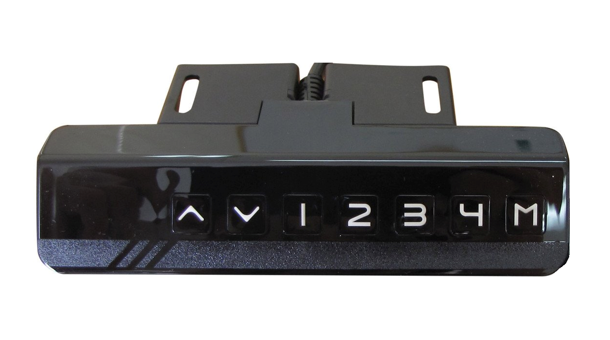

Summary:
Sedentary behavior is endemic in modern workplaces, contributing to negative physical and mental health outcomes. Although adjustable standing desks are increasing in popularity, people still avoid standing. We developed an open-source plug-and-play system to remotely control standing desks and investigated three system modes with a three-week in-the-wild user study (N=15). Interval mode forces users to stand once per hour, causing frustration. Adaptive mode nudges users to stand every hour unless the user has stood already. Smart mode, which raises the desk during breaks, was the best rated, contributing to increased standing time with the most positive qualitative feedback. However, non-computer activities need to be accounted for in the future. Therefore, our results indicate that a smart standing desk that shifts modes at opportune times has the most potential to reduce sedentary behavior in the workplace. We contribute our open-source system and insights for future intelligent workplace well-being systems.
Project Details:
The aim of this project was to create a circuit board that could remotely control an electric standing desk. I aimed to make the controller work with desks that use this seven-button style keypad, because the keypad is connected to the main controller board of the desk with an ethernet cable, making it easy to create a plug and play system.
We needed to understand the signals that were being communicated from the keypad to the motor, so we used a vintage digital logic analyzer to measure the signals that passed through each wire for each keypress.
We were successfully able to measure the signals, so we built some crude prototypes to see if we could make the desk move by simulating the keypad presses. Of course, this started with some messy prototyping.
Once we had it figured out, I designed a custom circuit board using optocouplers so we could control the desk from the board but also allow the keypad presses to pass through if the user wanted to control the desk manually. When the boards arrived, this called for a lot more soldering for Sven and I.
We needed many controllers so we could recruit users to participate in the study in parallel, so we created quite a few.
You can get an idea about what the individual parts on the ciruit board do in the next picture.
We then created different modes and deployed the controllers in the field for 3 weeks in peoples' workplaces. The most preferred mode was the one that moved while users were away from their desks, as you can see in the video.